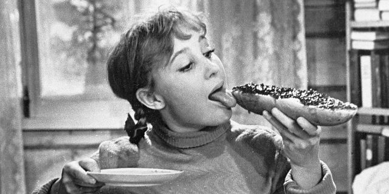

5 главных ошибок в питании, которые мешают похудеть
Здоровая диета полна ловушек. Будьте начеку!
Ошибка 1. Вы не следите за размером порций
Многие считают, что если продукт полезен, то можно есть его в неограниченном количестве. Это большая ошибка. Даже полезные продукты вроде круп, цельнозерновых макарон или сладких фруктов, потребляемые без ограничений, вполне могут свести на нет все ваши старания.
Как исправить
- Купите кухонные весы и взвешивайте все продукты, которые потребляете.
- Скачайте приложение для подсчёта калорий или ведите дневник, чтобы не превышать свою дневную норму.
- Помните, что на упаковках и в таблицах указывается калорийность на 100 граммов необработанного продукта, а вес сухого / сырого и готового продуктов может сильно отличаться. Поэтому либо взвешивайте продукты до приготовления, либо ищите в таблицах калорийности готовые продукты.
Ошибка 2. Вы не учитываете калорийность соуса
Многие худеющие предполагают, что небольшое количество соуса не сильно увеличивает калорийность блюда. На самом деле покупные соусы, как правило, очень калорийные и жирные: в них содержится около 30 граммов жиров и более 300 килокалорий на 100 граммов. Добавляя в блюдо 30 граммов соуса, вы потребляете 90 килокалорий, большая часть которых представлена насыщенными жирами.
Как исправить
- Замените покупные соусы на натуральные специи. Так вы снизите калорийность своих блюд не в ущерб их вкусу.
- Если не можете отказаться от соусов, исходите из принципа меньшего зла: вместо кетчупа купите натуральную томатную пасту, а майонез замените на соус из белого йогурта и горчицы.
Ошибка 3. Вы предпочитаете обезжиренные продукты
Обезжиренные молочные и кисломолочные продукты не только не помогают похудеть, но и заставляют потреблять больше калорий. Недавние исследованияLow–Fat Foods Can Make You Fatter! / Food and Brand Lab / Cornell University, проведённые Food & Brand Lab, показали, что знак «0% жирности» на упаковке заставляет потребителей съедать больше продукта и получать в среднем на 84 килокалории больше, чем при потреблении продуктов с нормальным содержанием жиров.
Как исправить
- Покупайте молочные продукты со средней жирностью.
- Считайте не только калории, но и количество белков, жиров и углеводов.
- Внимательно читайте этикетки: в некоторые обезжиренные продукты для улучшения вкуса добавляют сахар, что может увеличить их калорийность.
Ошибка 4. Вы предпочитаете жареные блюда
Растительное масло, используемое в процессе жарки, сильно повышает калорийность блюда.
Как исправить
- Используйте другие способы приготовления: запекайте продукты в духовке, готовьте на пару.
- Купите сковородку с антипригарным покрытием, которое позволяет жарить без добавления масла.
- Если используете масло при жарке, не наливайте его в сковороду из бутылки, а смазывайте поверхность кисточкой.
Ошибка 5. Вы едите слишком много полезных сладостей
Часто советуют заменить конфеты и печенье на более полезные перекусы: орехи и сухофрукты. Да, в них гораздо больше полезных веществ, но и калорий немало. Например, небольшая горстка грецких орехов весом в 30 граммов содержит 196 килокалорий, а такое же количество фиников — 80 килокалорий.
Как исправить
- Уберите тарелку с сухофруктами и орешками с видного места.
- Прежде чем перекусить полезными снэками, отмерьте порцию, взвесьте её и посчитайте калории.
Переходите на здоровое питание и не позволяйте ошибкам и иллюзиям свести на нет все ваши старания.